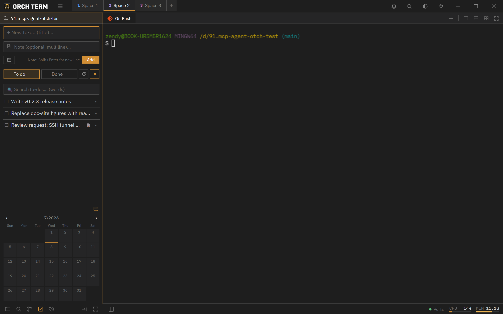

Core features · Task board
Task board
An independent to-do board for each Space. Jot down a title, memo, and due date and manage them with To-do/Done tabs and a monthly calendar — and the in-app AI of the same Space shares the very same board.
Opening the task panel
Open it with the To-dos icon in the sidebar mode bar or Ctrl+Shift+T (the command palette's "Tasks" also works). The board is specific to the current Space, so switching Spaces shows that Space's to-dos.
New to-do — title · memo · due date
Expand the input area with the + button on the right of the tab row. The title is a single line, the memo is multi-line (Shift+Enter for a newline), and you pick the due date from the calendar popup.
-
Expand the input with the + toggle

① The input area expanded by the + toggle (title·memo·due). ② The bottom calendar shows the selected day and due dates at a glance. -
Due date — calendar popup
Press the due-date button and a monthly calendar appears. Pick a date and a due badge is attached.
Select due dateJune 2026‹ ›SunMonTueWedThuFriSat 25262728293031 1234567 891011121314 15161718192021 22232425262728 293012345① See the selected day (filled) and days with a due date (dot) at a glance.
Card — done · memo · actions
Each card shows a done toggle (the check on the left), a due badge, and a memo indicator; expanded, it reveals the memo body and action icons (due · edit · copy · delete).
To-do/Done tabs · search · calendar
- To-do / Done tabs — separate incomplete from done. A count is shown next to each tab.
- Word search — filter titles and memos by word.
- Monthly calendar (bottom) — a per-day due-count badge. Collapsible/expandable.
- Refresh () — reload to-dos changed externally or by AI.
The in-app AI (claude·codex·agy) also operates the same board over MCP, so to-dos an agent adds show up right away on refresh.
Keyboard shortcuts
| Key | Action |
|---|---|
| Ctrl+Shift+T | Open to-dos mode (mac Cmd+Shift+T) |
| Shift+Enter | Newline in memo (while composing) |
| Ctrl+Shift+P | Command palette → "Tasks" |